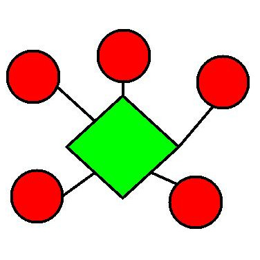
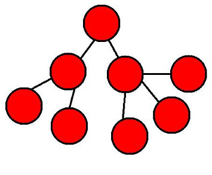
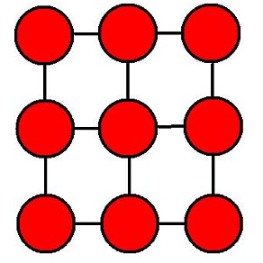
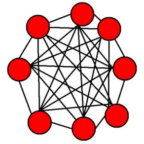

Redes inalámbricas de sensores
Israel Blancas Álvarez

¿Qué es una red inalámbrica de sensores? (WSN)
Es un conjunto de elementos sensores autónomos (llamados motas o nodos) distribuidos en el espacio y que se comunican entre sí de forma inalámbrica, recogiendo información de sus sensores. En estos nodos no se realiza procesamiento, si no que solo envían información o, como ocurre en muchas aplicaciones, reciben datos para dar alguna orden a elementos actuadores
Son redes inalámbricas Ad-Hoc (cooperan entre ellas para formar una red) sin infraestructura física preestablecida ni administración central.
¿Cómo surgen?
La posibilidad de crear dispositivos de bajo coste, pequeño tamaño y larga duración sin mantenimiento con capacidades de obtener información del entorno y enviarla de forma inalámbrica a un centro de procesado, ofrece solución a multitud de problemas existentes.
Que cada vez la capacidad de cómputo sea mayor a un menor precio y en un menor espacio, ayuda al desarrollo de esta tecnología
Hardware básico de un nodo
- Transceptor: para realizar comunicaciones
- Procesador: pequeños procesamientos
- Sensores: obtener valores digitales del mundo físico
- Memoria: guardar algunos datos
- Batería: alimentar el dispositivo
Puesto que se busca la autonomía del sistema, se desea que el consumo sea mínimo. Es por ello que en esta unidad no se hacen procesamientos (que consumirían mucha energía)
Topologías
|  Estrella |  Árbol |
|  Malla con conexión parcial |  Mallado con conexión total |
Sistemas operativos (I)
- Bertha: modelar, testear y desplegar una red de sensores distribuida de muchos nodos idénticos. Administración de procesos, manejo de las estructuras de datos, organización de los vecinos, interfaz de red...
- Nut/OS: SO para aplicaciones en tiempo real. Trabaja con CPU de 1 Byte. Multihilo, mecanismos de sincronización, administración de memoria dinámica, temporizadores asíncronos, puertos serie de E/S...
- Contiki: SO para usar en sistemas embebidos (como las motas)
- CORMOS: SO diseñado para WSN
Sistemas operativos (II)
- eCos: SO en tiempo real para aplicaciones y sistemas embebidos que usan solo un proceso
- TinyOS: es de los más conocidos. Escrito en nesC (una variación de C para contrarrestar los problemas de uso de memoria). Está desarrollado para redes de sensores con recursos limitados. Soporta gran cantidad de microprocesadores. Es un sistema operativo "event-driven", es decir, dirigido a eventos. Su núcleo ocupa 400bytes. Los comandos de configuración son implementados por el vendedor y los eventos el usuario
- Otros: LiteOS, t-Kernel, MagnetOS...
Lenguajes de programación
Son lenguajes muy optimizados para no perder ciclos de reloj innecesariamente
- nesC: "dialecto" de C muy utilizado en TinyOS
- SNACK: utilizado como sustituto del anterior cuando el volúmen de datos es muy alto o es preciso hacer muchos cálculos. Más sencillo y eficiente
- Protothreads: diseñado para programación concurrente. Provee de hilos de 2 bytes
- DCL: lenguaje de composición distribuido
- GalsC: programación funcional. Compatible con nesC. Permite concurrencia y es fácil de depurar
- SQTL: lenguaje de consulta sobre motas
Simuladores
- NS-2: es un simulador de eventos, orientado a la simulación de redes de investigación
- OPNET: orientada a aplicaciones empresariales. Gestión de rendimiento, análisis de configuración de red y capacidad de modelado y planificación de la misma
- OMNeT++: cuenta con un núcleo de simulación embebido. Su arquitectura es flexible y muy genérica. Muy popular en entornos industriales y científicos, debido a que es de código abierto
- CodeBlue: diseñado para proporcionar encaminamiento, descubrimiento y seguridad para redes inalámbricas médicas
Son muy ineficientes y, en ocasiones, complicados de utilizar. En muchas ocasiones, se opta por montar un prototipo de la WSN como si fuera el entorno de producción
Simuladores: NS-2
Problemas cartacterísticos de las WSN
- Fiabilidad: la topología que usemos influirá. También, debido a interferencias, hay que tener en cuenta la utilización de los saltos en frecuencia
- Conservación de la energía: es importante que la energía no sea un problema. El uso de protocolos de comunicación que tengan en cuenta esto, el poner en un modo de ahorro de energía las motas mientras no se esté realizando comunicación y tener en cuenta los tiempos de activación de los transductores, CPU... ayuda a minimizar este problema
- Tamaño de los sensores: suele estar limitado por el tamaño de la fuente de alimentación
- Seguridad: es necesario que la comunicación sea segura. Puede que sea importante que los datos que se envían no deban ser vistos por terceros. También es importante que no sea fácil acceder a la red (evitar que introduzcan datos erróneos, por ejemplo)
Actualidad
Para favorecer uno de los puntos fuertes de las WSN (su bajo costo), los fabricantes han intentado estandarizar los sus productos para que puedan interoperar con otros
Actualmente no existe un estándar para protocolos, hardware o representación de datos, aunque hay algunas propuestas
IEEE 802.15.4 LOW-RATE WPAN
- Permite transferencias de hasta 200kbps, pero es adaptable a las necesidades de las WSN (10kbps)
- Campo de direcciones de 16 bits extendible a 64 bits
- Permite implementar acuse de recibo de tramas
- Características diseñadas para minimizar el uso de nergía
- Tres funcionalidades de red: coordinador PAN (inicia la red y es el controlador de la misma y envía balizas), coordinador (puede comunicarse con cualquier dispositivo a su alcance y envía balizas. Incluso, puede convertirse en coordinador PAN iniciando su propia red) y dispositivo (solo comunica con un coordinador o coordinador PAN)
- Dos tipos de dispositivos: de función completa (debe tener memoria suficiente para guardar la información de enrutamiento que imponga la red. Puede tomar cualquiera de los tres roles) o de función reducida (poca memoria y solo puede funcionar como un dispositivo de red)
Alianza ZigBee: estandarizando capas de aplicación IEEE 802.15.4
- Estandariza las capas de aplicación de IEEE 802.15.4 para asegurar interoperatibilidad
- Baja velocidad de transferencia de datos y bajo coste
- Protocolo de acceso al medio poco eficiente (en términos energéticos)
- Topología de red formada por nodos simples y nodos de enrutamiento, con interconexiones en estrella (reducción de fiabilidad, del alcance y costoso energéticamente, ya que los nodos enrutadores tienen que estar encendidos siempre)
WirelessHART
- Es una adaptación de HART, diseñado para la monitorización de sensores en entornos industriales
- Acceso al medio mediante TDMA (ahorro tiempo y energía en sensores)
- Topología de red mallada (mayor fiabilidad)
- Todos los nodos pueden encaminar y son iguales (mayor simplicidad)
- Compatible con IEEE 802.15.4
- Protocolo de mensajes propio (Smart Data)
- Nuevo estándar (SP100.11) en desarrollo por ISA
DUST Networks
Empresa surgida a partir un proyecto llevado a cabo por Kris Pister en Berkeley
Protocolo propio TSMP
- Capa física: algoritmos para evitar interferencias
- Capa MAC: TDMA sincronizando en slots de tiempo (usa ACK, evita colisiones y es altamente escalable)
- Auto-organización: descubrimiento de vecinos, ajuste de potencia RF y adquisicón de información de sincronización y saltos de frecuencia
- Cada nodo tiene varias rutas para llegar a un mismo destino (sabe si llega o no mediante ACK)
- Gracias al uso de un acceso al medio sincronizado, el consumo de energía se reduce drásticamente
Tendencias
- 6LoWPAN: adaptación de IPv6 para conseguir compatibilidad entre Internet y WSN
- Convergencia en el formato de los datos
- "Pervasive computing": computación ubícua, donde la red de sensores tome decisiones
- Web de sensores: una red amorfa de sensores distribuidos en el espacio que se comunican inalámbricamente entre ellos. La información que capta un nodo es compartida con todos los nodos de la red, permitiendo la actuación de toda la web de forma conjunta y autónoma. No necesita de agentes exteriores para funcionar.
Fabricantes
Algunos fabricantes conocidos son:
- CROSSBOW: productos como Mica, Mica2, Micaz, Mica2dot
- SENTILLA:: Tmote Sky, diseñados por la Universidad de Berkeley y preparados para ser usados por TinyOS.
- SHOCKFISH:: empresa suiza que desarrolla TinyNode
- EMBER: uno de los promotores de ZigBee
- SUN (Oracle): Sun SPOT, que utiliza la máquina virtual de Java
- Nano-RK: desarrolla FireFly
Aplicaciones
- Agricultura de precisión
- Monitorización de parámetros ambientales
- Calidad del agua
- Mayor rendimiento de instalaciones solares y eólicas
- Aplicación en el sector de la construcción
- Eficiencia energética en edificios
- Lectura remota de contadores
- Procesos industriales
- Control de tráfico
- Control médico
- Domótica
- Prevención de desastres
Aplicaciones: Quirotec
Aplicaciones: Proyecto asistencia
Aplicaciones: Agricultura de precisión
Aplicaciones: Detección de catástrofes
Aplicaciones: Control de carreteras
Gracias
¿Alguna pregunta?
Referencias
- Universidad Carlos III de Madrid - ANÁLISIS DE PROTOCOLOS DE ENRUTAMIENTO PARA REDES DE SENSORES INALÁMBRICAS
- Universidad Politécnica de Valencia - Redes inalámbricas de sensores: Una nueva arquitectura eficiente y robusta basada en jerarquía dinámica de grupos - Tesis
- Artículo en Libelium de David Gascón
- REDES DE SENSORES INALÁMBRICAS- Jesús Serna Sanchis
- TinyOS: "An Operative System for Wireless Sensor Networks". Mark Weiss
- Redes inalámbricas de sensores: teoría y aplicación práctica. Roberto Fernández Martínez y otros. Universidad de La Rioja
- Shahin Farahni. "Zigbee. Wireless Networks and Transceivers"